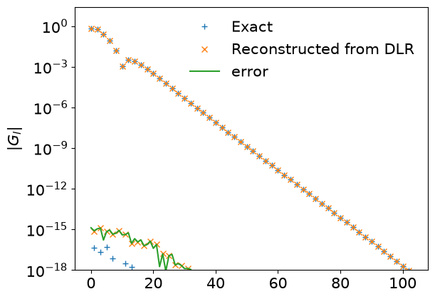

Discrete Lehmann Representation#
Theory#
We explain how to transform expansion coefficients in IR to the discrete Lehmann representation (DLR) [1].
In sparse-ir, we choose the poles based on the roots of the IR basis function \(V_L(\omega)\) [2] (In the original paper [1], a more systematic way is proposed).
We model the spectral function as
where the poles \(\{\bar{\omega}_1, \cdots, \bar{\omega}_{L}\}\) are the roots of \(V_L(\omega)\), the first basis function beyond the \(L\) functions kept in the basis. This choice is heuristic but allows us a numerically stable transform between \(\rho_l\) and \(c_p\) through the relation
where the matrix \(\boldsymbol{V}_{lp}~[\equiv V_l(\bar{\omega}_p)]\) is well-conditioned. As a result, in DLR, the Green’s function of fermions is represented as
where \(\nu = n\pi/\beta\) with odd \(n\) is a fermionic Matsubara frequency.
[1] J. Kaye, K. Chen, O. Parcollet, Phys. Rev. B 105, 235115 (2022).
[2] H. Shinaoka et al., arXiv:2106.12685v2.
We consider fermions and the semi circular DOS
The corresponding Green’s function is given by
The Green’s function is expanded in IR as
Below, we demonstrate how to transform \(G_l\) to the DLR coefficients \(c_p\).
import numpy as np
from sparse_ir import FiniteTempBasis, MatsubaraSampling
from sparse_ir.dlr import DiscreteLehmannRepresentation
%matplotlib inline
from matplotlib import pyplot as plt
plt.rcParams['font.size'] = 15
Implementation#
Create basis object#
wmax = 1.0
lambda_ = 1e+4
beta = lambda_/wmax
basis = FiniteTempBasis("F", beta, wmax, eps=1e-15)
print(basis.size)
104
Setup model#
rho = lambda omega: (2/np.pi) * np.sqrt(1-omega**2)
omega = np.linspace(-wmax, wmax, 1000)
plt.xlabel(r'$\omega$')
plt.ylabel(r'$\rho(\omega)$')
plt.plot(omega, rho(omega))
plt.show()

rhol = basis.v.overlap(rho)
ls = np.arange(basis.size)
plt.semilogy(ls[::2], np.abs(rhol)[::2], marker="x")
plt.ylim([1e-5, None])
plt.show()

gl = - basis.s * rhol
plt.semilogy(ls[::2], np.abs(gl)[::2], marker="x")
plt.ylim([1e-5, None])
plt.show()

Create a DLR object and perform transformation#
dlr = DiscreteLehmannRepresentation(basis)
# To DLR
g_dlr = dlr.from_IR(gl)
plt.plot(dlr.sampling_points, g_dlr, marker="x", ls="")
plt.show()

# Transform back to IR from DLR
gl_reconst = dlr.to_IR(g_dlr)
plt.semilogy(np.abs(gl), label="Exact", ls="", marker="+")
plt.semilogy(np.abs(gl_reconst), label="Reconstructed from DLR", ls="", marker="x")
plt.semilogy(np.abs(gl-gl_reconst), label="error")
plt.ylim([1e-18,None])
plt.ylabel("$|G_l|$")
plt.legend(loc="best", frameon=False)
plt.show()

Evaluation on Matsubara frequencies#
v = 2*np.arange(-1000, 1000, 10) + 1
iv = 1j * v * (np.pi/beta)
transmat = 1/(iv[:,None] - dlr.sampling_points[None,:])
giv = transmat @ g_dlr
giv_exact = MatsubaraSampling(basis, v).evaluate(gl)
plt.plot(iv.imag, giv_exact.imag, ls="", marker="x", label="Exact")
plt.plot(iv.imag, giv.imag, ls="", marker="x", label="Reconstructed from DLR")
plt.xlabel(r"$\nu$")
plt.ylabel(r"Im $G(\mathrm{i}\nu)$")
plt.show()